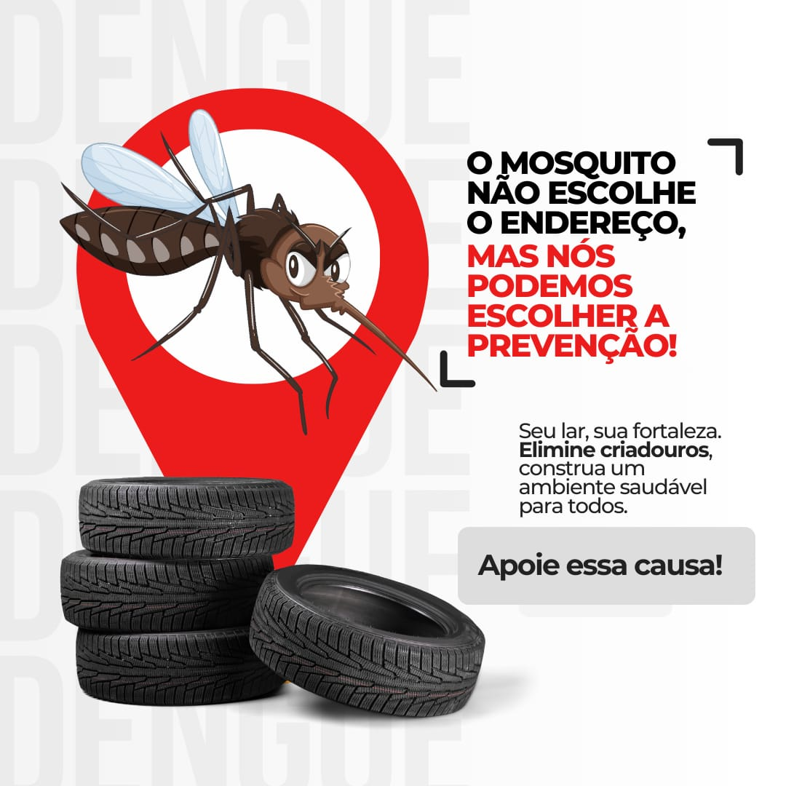

Conscientização: Combate à Dengue Começa com Você
Por que a conscientização é importante
A dengue é uma doença que pode ser prevenida. Informar a população sobre os riscos e como agir é fundamental para reduzir a proliferação do mosquito Aedes aegypti. Cada pessoa que adota medidas simples ajuda a proteger a comunidade inteira.
Ações Simples que Fazem a Diferença
- Eliminar água parada: recipientes como vasos, garrafas, pneus e caixas d’água devem ser limpos ou descartados.
- Cuidar do lixo: manter o ambiente limpo evita que o mosquito encontre locais para se reproduzir.
- Informar vizinhos e comunidade: compartilhar conhecimento ajuda a criar uma rede de prevenção.
- Atenção durante a chuva: períodos chuvosos aumentam a reprodução do mosquito, exigindo mais cuidado.
O Papel da Educação e da Informação
Campanhas de conscientização, palestras em escolas e ações comunitárias ajudam a espalhar informações corretas sobre a dengue. Quanto mais pessoas souberem identificar sintomas e prevenir a doença, menor será o impacto de futuros surtos.
Mensagem Final
A dengue é um problema de todos. Prevenir é mais eficaz do que remediar. Cada atitude conta: cuidar do ambiente, se informar e alertar outras pessoas é o caminho para reduzir os casos e salvar vidas.